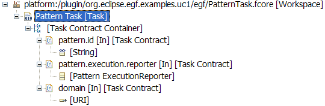

EGF Tutorial - Pattern. First steps. |
This first tutorial explains how to create and execute simple patterns with EGF. A pattern is a solution to a recurrent generation problem. A pattern is based on a language, for instance Jet for model-to-text transformation. The pattern technique allows pattern inheritance, delegation to other patterns in order to elaborate more reusable and customizable generation solutions.
Pattern organization. Patterns are organized by pattern libraries. A pattern library contains a set of patterns and a set of pattern libraries.
Pattern nature. A pattern nature indicates to which language the pattern implementation must conform (e.g. Java, Jet).
Pattern views. A pattern is visualized with three different folders: 1) Overview, 2) Specification which represents the external view of a pattern, 3) Implementation which represents the internal view of a pattern and where the pattern is implemented.
The sequence of actions to create a pattern:
Create a pattern with the Jet nature.
Specification view. This view enables to set the super-pattern of the current pattern when pattern inheritance is needed, the pattern nature already set during the pattern creation, the pattern parameters.
Pattern query and parameter. The pattern applies queries over the resource that the pattern consumes, for instance a model. Each query record is successively stored in a parameter. The record process is described in the pattern implementation.
Pattern query. EGF proposes a default model query. The query list is extensible.
Pattern parameter. The pattern type is either a class defined in an ecore model or a Java type (class or interface).
The sequence of actions to pattern parameters and their query:
Create an EClass parameter with the Basic query to navigate over the model.

Implementation view. This view enables to define define pattern methods, the method orchestration, and local variables.
Pattern methods. Three methods are predefined: header, init, and footer. Header is used for instance to declare the Jet declaration, init for the initialization of local variables. The user methods contain a description that conforms to the pattern nature, for instance Jet code.
Pattern method orchestration. The method orchestration defines the order to call available methods and patterns: methods local to the current pattern, methods from the super-patterns, pattern call without parameter, pattern call with parameter context injection.
Pattern variables. The pattern variables are accessible by any method of the current pattern. The type is either a class defined in an ecore model or a Java type (class or interface).
The sequence of actions to access to a method implementation: double-click on a method of the method list. Next, a pattern templates editor allows to edit any other method.
Implement the default body method. Add the following Jet code:
Hello <%= aClass.getName() %>!
Reporter. A reporter serves to report the result of the pattern implementation, for instance on the console or in a file. A reporter implements the PatternExecutionReporter class.
Report process. There are two methods to report a queries: 1) for each query instance with the loopFinished method, 2) when the query is completely process with the executionFinished method.
Create a reporter Java class like this one:
Package org.eclipse.egf.examples.uc1.reporter;
import java.util.Map;
import org.eclipse.egf.model.pattern.PatternContext;
import org.eclipse.egf.model.pattern.PatternExecutionReporter;
public class MyReporter implements PatternExecutionReporter{
@Override
public void executionFinished(String output, PatternContext context) {
System.out.println("Result of pattern:\n"+output);
}
@Override
public void loopFinished(String output, PatternContext context,
Map < String, Object > parameterValues) {
// TODO Auto-generated method stub
}
}
Pattern strategies. A pattern strategy indicates how to apply patterns onto a resource. For instance, a pattern-oriented strategy successively applies a set of patterns onto a resource; a model-oriented strategy applies a set of patterns successively onto each model element.
Reporter task. A task applies a strategy with a set of arguments: 1) the resource (e.g., a model URI), 2) the pattern(s) or the pattern library(ies), 3) the reporter. Those arguments are provided by a task invocation in a factory component.
The sequence of actions to create a task:
The sequence of actions to configure the task invocation:
Create a task that uses PatternTask which uses the reporter previously created.

Create a task invocation for the new task.

Finally, execute the factory component.